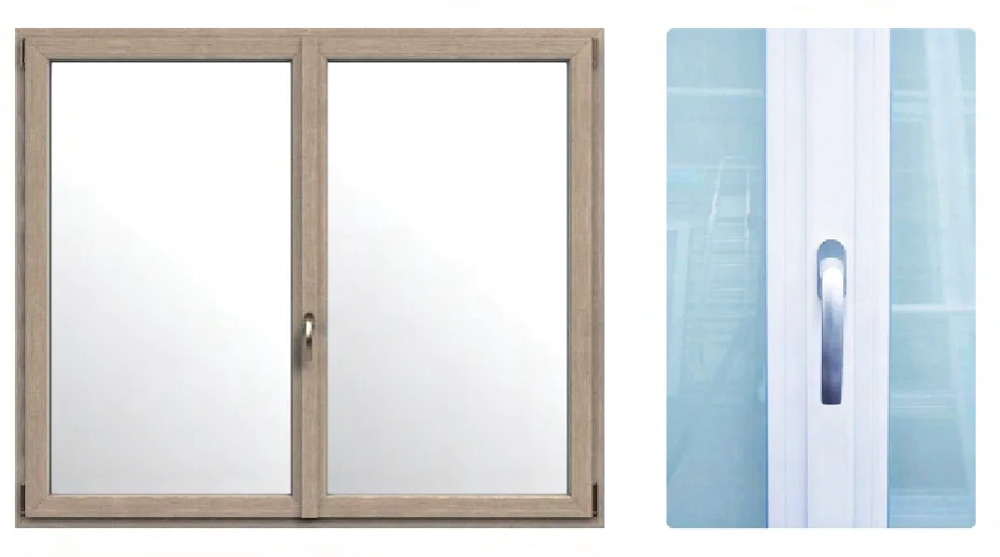

Schede tecniche
profili finestre in PVC
Caratteristiche tecniche complete dei 6 profili di infissi selezionati da Marsicalluminio: prestazioni termiche, dimensioni, sistemi di guarnizioni e tipologie di vetrocamera.
← Torna alla homeLinea Classic MD 82
Il profilo universale da 82 mm con 6 camere di isolamento e sistema MD a 3 guarnizioni. La scelta ideale per nuove costruzioni e ristrutturazioni che richiedono elevate prestazioni termiche e affidabilità a lungo termine.

Dati tecnici principali
| Profondità di montaggio | 82 mm |
|---|---|
| Numero di camere | 6 camere di isolamento |
| Sistema di tenuta | MD – 3 guarnizioni (perimetrale mediana) |
| Uw finestra rif. (1230×1480 mm) | ≈ 0,76 W/m²K con triplo vetro + canalina calda |
| Spessore vetrocamera accettato | 24 – 48 mm |
| Classe profilo (EN 12608) | Classe A – spessore parete ≥ 2,8 mm |
| Rinforzo metallico | Acciaio zincato inserito nelle camere portanti |
| Sistemi di rinnovazione compatibili | Alette di rinnovazione 35 mm e 60 mm |
| Ferramenta compatibile | activPilot, duoPort SK, PAS |
Tipologie di apertura
Caratteristiche costruttive
- Profilo PVC con 6 camere aria che interrompono i ponti termici lungo l'intero perimetro del telaio
- Sistema MD con guarnizione centrale mediana aggiuntiva: tenuta superiore ad aria, acqua e vento rispetto al sistema AD a 2 guarnizioni
- Listello fermavetro con guarnizione coestrusiva integrata per una tenuta ottimale del vetrocamera
- Rinforzo in acciaio zincato inserito nelle camere strutturali: garantisce robustezza e stabilità dimensionale nel tempo
- Possibilità di applicare rivestimento in alluminio esterno su entrambe le ante e il telaio per una finitura bicolore
- Compatible con sistemi di ventilazione integrata (microventilazione)
- Omologazione per utilizzo in zone climatiche da A a F (tutte le zone italiane)
Vetrocamere consigliate
Triplo vetro: 4/14/4/12/4 con due lastre Low-E e argon → Ug ≈ 0,5 W/m²K
Con canalina calda (Warm Edge): riduzione del ponte termico perimetrale e abbattimento del rischio condensa
Vetrocamera max accettata: 48 mm — consente l'impiego di vetri acustici e di sicurezza VSG
Colori e finiture
- Bianco standard (RAL 9016) come colore base di produzione
- Foliatura in tutti i colori RAL e nelle principali finiture effetto legno (rovere, douglas, noce)
- Antracite (RAL 7016 / RAL 7021) – tra le finiture più richieste
- Possibilità di bicolore: colore diverso lato interno e lato esterno
Linea ArtLine MD 82
Variante estetica del sistema 82 mm con listelli fermavetro dritti e rotondi intercambiabili. Offre le stesse eccellenti prestazioni termiche del Classic MD con un design contemporaneo e linee pulite, ideale per ambienti moderni e ampie vetrate.

Dati tecnici principali
| Profondità di montaggio | 82 mm |
|---|---|
| Numero di camere | 6 camere di isolamento |
| Sistema di tenuta | MD – 3 guarnizioni (perimetrale mediana) |
| Uw finestra rif. (1230×1480 mm) | ≈ 0,76 W/m²K con triplo vetro + canalina calda |
| Spessore vetrocamera accettato | 24 – 48 mm |
| Classe profilo (EN 12608) | Classe A – spessore parete ≥ 2,8 mm |
| Listello fermavetro | Dritto e tondo (intercambiabili) |
| Rinforzo metallico | Acciaio zincato |
| Ferramenta compatibile | activPilot, duoPort SK, PAS |
Differenze rispetto al Classic MD
- Listelli fermavetro in versione dritta (profilo piatto) e tonda (profilo arrotondato), selezionabili in base alle preferenze estetiche
- Il listello dritto conferisce un aspetto minimalista e moderno, particolarmente apprezzato in architetture contemporanee
- Il listello tondo offre un richiamo classico con linee morbide, adatto a restauri e abitazioni in stile tradizionale
- Stessa base tecnica del Classic MD: identica profondità 82 mm, 6 camere e sistema MD a 3 guarnizioni
- Identiche prestazioni termiche: Uw ≈ 0,76 W/m²K con vetrocamera triplo e canalina calda
Caratteristiche costruttive
- Profilo PVC a 6 camere con sistema MD: tenuta superiore ad aria, acqua e permeabilità al vento
- Adatto per vani finestra di grandi dimensioni grazie al rinforzo in acciaio dimensionabile
- Compatibile con finestre a 2 ante (apertura contrapposta o parallela) e portefinestre
- Possibilità di rivestimento in alluminio esterno per finitura bicolore su misura
- Applicabile in configurazioni fisse (FK), anta-ribalta, a ribalta e scorrevole PSK
Applicazioni tipiche
Ambienti residenziali moderni — il design pulito si integra perfettamente con interni minimalisti e facciate architettoniche contemporanee.
Portefinestre a 2 ante — la versione a 2 ante è tra le più richieste grazie all'aspetto curato e alle ottime prestazioni di tenuta.
Pro Evolution 72 MD
/ Ecoline AD 73
Profilo da 72–73 mm con 5 camere di isolamento e sistema AD a 2 guarnizioni. Offre un ottimo rapporto qualità/prezzo, rendendolo la scelta ideale per ristrutturazioni, edilizia residenziale e commerciale con vincoli di budget.

Dati tecnici principali
| Profondità di montaggio | 72–73 mm |
|---|---|
| Numero di camere | 5 camere di isolamento |
| Sistema di tenuta | AD – 2 guarnizioni (perimetrale esterna e interna) |
| Uw finestra rif. (1230×1480 mm) | ≈ 0,88 W/m²K con triplo vetro + canalina calda |
| Spessore vetrocamera accettato | 24 – 44 mm |
| Sistemi di rinnovazione compatibili | Alette di rinnovazione 35 mm e 58 mm |
| Ferramenta standard | activPilot (Winkhaus) |
| Ferramenta opzionale | duoPort SK, PAS |
| Versioni disponibili | Ecoline AD (standard) – Prestige Ecoline (estetica premium) |
Versioni del sistema
Prestige Ecoline: variante con un'estetica più curata (listelli e profili con sezioni più sottili), mantenendo le stesse prestazioni tecniche del modello base. Ideale per abitazioni che richiedono un aspetto più raffinato pur restando in un range di costo contenuto.
Caratteristiche costruttive
- Profilo a 5 camere con sistema AD (2 guarnizioni): soluzione consolidata e di alta affidabilità per il segmento residenziale
- Ferramenta activPilot di Winkhaus: sistema a perimetro continuo con chiusura multi-punto integrata per sicurezza e tenuta ottimale
- Rinforzo in acciaio zincato nelle camere strutturali per stabilità dimensionale e resistenza alle deformazioni
- Alette di rinnovazione da 35 e 58 mm: consente installazione su vecchio telaio senza demolizioni
- Compatibile con portefinestre scorrevoli PSK
- Profondità ridotta (73 mm vs 82 mm) ideale per muri sottili o quando si vuole ridurre l'ingombro del serramento
Applicazioni tipiche
- Ristrutturazioni di edifici residenziali con necessità di contenimento dei costi
- Edilizia commerciale e uffici con standard termici buoni ma non elevati
- Sostituzione rapida su telaio esistente grazie alle alette di rinnovazione
- Zona climatica B–D: prestazioni pienamente adeguate alle zone a clima temperato
Termo Evolution 80 MD
Il top di gamma della linea: 80 mm di profondità, 6 camere di isolamento e sistema MD a 3 guarnizioni. Raggiunge il miglior valore di trasmittanza dell'intera gamma con Uw = 0,72 W/m²K, rendendolo la scelta d'eccellenza per edifici a basso consumo energetico e passive house.

Dati tecnici principali
| Profondità di montaggio | 80 mm |
|---|---|
| Numero di camere | 6 camere di isolamento |
| Sistema di tenuta | MD – 3 guarnizioni (perimetrale mediana) |
| Uw finestra rif. (1230×1480 mm) | 0,72 W/m²K — migliore della gamma |
| Spessore vetrocamera accettato | 24 – 48 mm |
| Classe profilo (EN 12608) | Classe A – spessore parete ≥ 2,8 mm |
| Rinforzo metallico | Acciaio zincato nelle camere portanti |
| Classe energetica finestra | A+ con vetrocamera triplo ottimizzato |
| Ferramenta compatibile | activPilot, duoPort SK, PAS, activPilot Select |
Perché il Termo Evolution 80 è il migliore della gamma
Profondità ottimizzata: 80 mm rappresenta il punto di equilibrio tra spessore delle camere e compattezza del profilo, massimizzando le camere isolanti senza esagerare con l'ingombro del telaio.
Caratteristiche costruttive
- 6 camere di isolamento che interrompono efficacemente i percorsi di dispersione termica del telaio
- Sistema MD: la terza guarnizione mediana agisce come barriera aggiuntiva contro infiltrazioni d'aria, acqua e vento, con prestazioni di tenuta di categoria superiore
- Compatibile con vetrocamere fino a 48 mm: permette l'uso di triplo vetro standard e vetri acustici ad alto abbattimento
- Listello fermavetro con guarnizione coestrusiva: elimina ponti termici al bordo vetro e assicura una tenuta duratura nel tempo
- Certificazione per le più severe zone climatiche italiane (zona E e F) e per edifici passivi
- Ampia compatibilità con ferramenta professionale di ultima generazione, incluso il sistema activPilot Select per ante pesanti
Applicazioni consigliate
- Edifici NZEB (nearly zero energy building) e passive house
- Nuove costruzioni in zone climatiche E e F (Appennino, Alpi, Nord Italia)
- Ristrutturazioni con incentivo energetico (Ecobonus, Superbonus): il valore Uw 0,72 soddisfa i requisiti più stringenti
- Abitazioni di pregio dove la massima efficienza termica è prioritaria
Termo Elegant 76 MD
Profilo da 76 mm con 6 camere e sistema MD a 3 guarnizioni. Design raffinato con linee sobrie e silenziose che lo rendono particolarmente adatto ad abitazioni di pregio. Accetta la vetrocamera più spessa della gamma (52 mm), aprendosi a vetri acustici e di sicurezza di grandi spessori.


Dati tecnici principali
| Profondità di montaggio | 76 mm |
|---|---|
| Numero di camere | 6 camere di isolamento |
| Sistema di tenuta | MD – 3 guarnizioni (perimetrale mediana) |
| Uw finestra rif. (1230×1480 mm) | 0,74 W/m²K con triplo vetro + canalina calda |
| Spessore vetrocamera accettato | 24 – 52 mm — massimo della gamma |
| Classe profilo (EN 12608) | Classe A |
| Rinforzo termico | Standard (senza FORTHEX) |
| Variante disponibile | LUX Optima (vetrocamera ottimizzata per luce naturale) |
| Ferramenta compatibile | activPilot, duoPort SK, PAS |
Punto di forza: vetrocamera fino a 52 mm
• Vetrocamere acustiche asimmetriche (es. 44.2/16/4/16/33.1) per abbattimento Rw > 48 dB
• Vetri di sicurezza VSG di grandi spessori per finestre a pavimento o in zone sismiche
• Triplo vetro con intercapedini extra per Ug fino a 0,4 W/m²K
Variante LUX Optima: profilo studiato per ottimizzare la quantità di luce naturale trasmessa all'interno, riducendo al minimo i battenti visibili e massimizzando la superficie trasparente.
Caratteristiche costruttive
- Profilo con linee sobrie e sezioni visibili ridotte, per un aspetto elegante e non invasivo
- 6 camere di isolamento con sistema MD a 3 guarnizioni: prestazioni di tenuta di categoria superiore
- Capacità di accogliere vetrocamere molto spesse (fino a 52 mm) grazie a listelli fermavetro rinforzati
- Design adatto sia ad abitazioni classiche che contemporanee
- Compatibile con tutti i sistemi di apertura: anta-ribalta, ribalta, fisso, PSK
- Possibilità di rivestimento in alluminio esterno per finitura bicolore
Differenza rispetto alla versione Premium
- Il Termo Elegant 76 MD standard raggiunge Uw 0,74 W/m²K (versione senza FORTHEX)
- La versione Premium (con rinforzo termico FORTHEX nel telaio) migliora la trasmittanza del telaio (Uf) portando l'Uw della finestra a 0,73 W/m²K
- Per i dettagli sulla versione Premium si rimanda alla scheda dedicata
Termo Elegant 76 Premium MD
La versione più performante del Termo Elegant 76: integra il rinforzo termico esclusivo FORTHEX nel telaio fisso, riducendo ulteriormente la trasmittanza del telaio (Uf) e portando l'Uw della finestra completa a 0,73 W/m²K. Design di pregio con prestazioni da edificio passivo.

Dati tecnici principali
| Profondità di montaggio | 76 mm |
|---|---|
| Numero di camere | 6 camere di isolamento |
| Sistema di tenuta | MD – 3 guarnizioni (perimetrale mediana) |
| Uw finestra rif. (1230×1480 mm) | 0,73 W/m²K con triplo vetro + canalina calda |
| Spessore vetrocamera accettato | 24 – 52 mm — massimo della gamma |
| Classe profilo (EN 12608) | Classe A |
| Rinforzo termico telaio | FORTHEX — inserto isolante ad alta efficienza nel telaio fisso |
| Miglioramento vs versione standard | Uw 0,74 → 0,73 W/m²K grazie a Uf ridotto |
| Ferramenta compatibile | activPilot, duoPort SK, PAS, activPilot Select |
Tecnologia FORTHEX
L'effetto pratico è un abbattimento di circa 0,01 W/m²K rispetto alla versione senza FORTHEX (Uw da 0,74 → 0,73 W/m²K), con un beneficio energetico annuo apprezzabile in edifici con grande superficie finestrata.
Caratteristiche costruttive
- Identica geometria esteriore e design della versione Termo Elegant 76 MD standard
- Rinforzo FORTHEX inserito nella camera principale del telaio fisso: non visibile dall'esterno, non influisce sull'estetica
- 6 camere di isolamento con sistema MD a 3 guarnizioni: prestazioni di tenuta di categoria superiore
- Accetta vetrocamere fino a 52 mm: massima flessibilità per vetri acustici, di sicurezza e triplo vetro ad alta performance
- Compatibile con rivestimento in alluminio esterno per finitura bicolore
- Idoneo per edifici che devono rispettare requisiti Ecobonus/Superbonus con Uw ≤ 1,40 W/m²K (ampiamente soddisfatto) e per i bandi più restrittivi che richiedono Uw ≤ 0,80 W/m²K
Applicazioni consigliate
- Abitazioni di pregio e residenze private di alta qualità dove si cerca il massimo del comfort termico con un design elegante
- Ristrutturazioni con detrazione energetica: Uw 0,73 soddisfa anche i requisiti più stringenti dei decreti CAM
- Edifici in zone climatiche E e F dove ogni decimo di W/m²K fa la differenza nel bilancio energetico annuale
- Interventi su facciate esposte a Nord dove la dispersione attraverso i serramenti è massima
Confronto tra i 6 profili
Tutti i profili sono in PVC di classe A con rinforzi in acciaio zincato. I valori Uw sono calcolati su finestra referenziale 1230×1480 mm con vetrocamera triplo a bassa emissività e canalina calda (EN ISO 10077).
| Sistema | Profondità | Camere | Guarnizioni | Uw min | Vetrocamera | Punto di forza | Scheda |
|---|---|---|---|---|---|---|---|
| Termo Evolution 80 MD | 80 mm | 6 | MD (3) | 0,72 | 24–48 mm | Migliore isolamento della gamma | ↑ Leggi |
| Termo Elegant 76 Premium MD | 76 mm | 6 | MD (3) | 0,73 | 24–52 mm | FORTHEX nel telaio · vetro 52 mm | ↑ Leggi |
| Termo Elegant 76 MD | 76 mm | 6 | MD (3) | 0,74 | 24–52 mm | Design raffinato · vetro 52 mm | ↑ Leggi |
| Classic MD 82 | 82 mm | 6 | MD (3) | 0,76 | 24–48 mm | Classe A · rinnovazione 35/60 | ↑ Leggi |
| ArtLine MD 82 | 82 mm | 6 | MD (3) | 0,76 | 24–48 mm | Listelli dritti/rotondi · estetica moderna | ↑ Leggi |
| Pro Evolution 72 MD / Ecoline AD | 72–73 mm | 5 | AD (2) | 0,88 | 24–44 mm | Miglior rapporto qualità/prezzo | ↑ Leggi |